Whose Sleeves: A Group Show
Curated by Peter Mandradjieff
Visual Artists: Bianca Beck, Jenn Nagle Myers, Leah Patgorski, Amelia Saddington
Written Responses: Craig Fox (essay), Cate Peebles (poem)
The genre of Japanese painting Tagasode Byobu (Whose sleeves?) depicts elegant fabrics draped on wooden clothing racks. The phrase, which comes from a tenth century Japanese poem, suggests the notion that an individual's personal effects project a more telling portrait than a lifelike depiction. Painted on the panels of folding screens, the viewer is invited to dream about what sort of person the owner might be. Who was just wearing these silks? Where did they go, and why? The suggestive genre seduces - and these art works seduce us, too, but in a way that engages us with intention and emotion.
Through familiar forms, these diverse art works connect us to psychological states and ask us to consider our relationship to personal and political identity, social isolation, ecological destruction, and gender roles. Texture, color, sound, and raw material create mood, scale and a heightened awareness of physicality. Everyday domestic actions, such as digging, sewing, painting, and sitting, are employed by the artists to create unique and powerful narratives within their work. These evocative objects tell compelling stories and elicit emotional reactions that urge us to realign our intellectual questions and experience a refreshed exploration of values, ideals, and love.
Whose Sleeves was held at Union Hall, a gallery space in Pittsburgh.
Installation Views
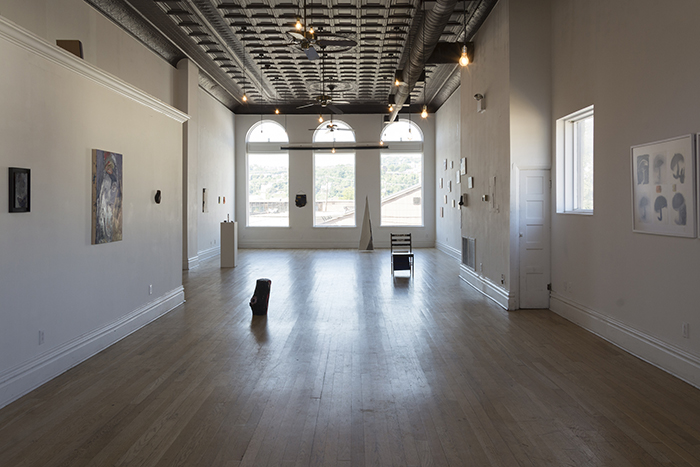
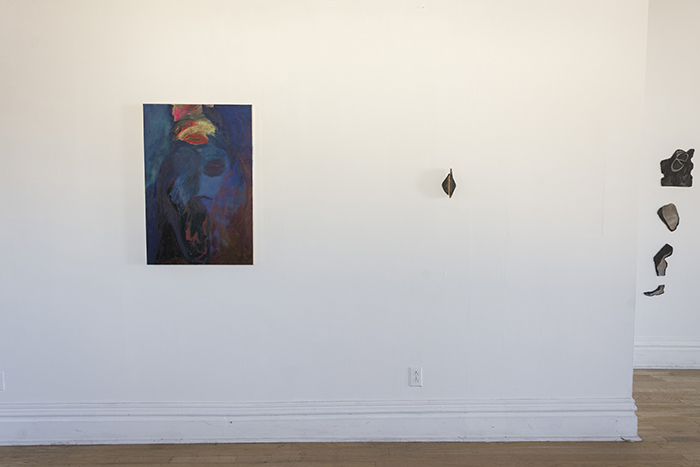
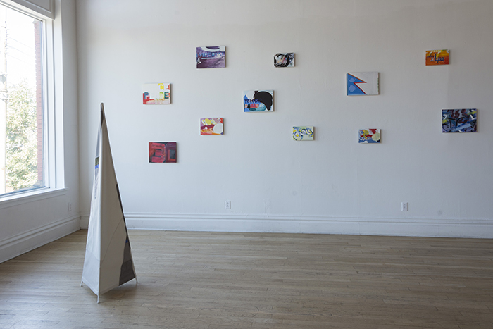
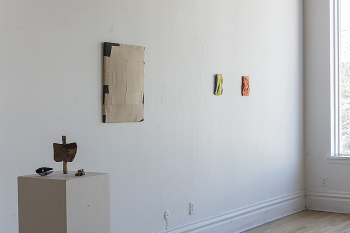
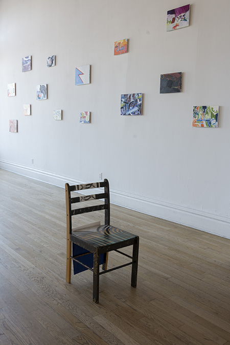
Selected Individual Works
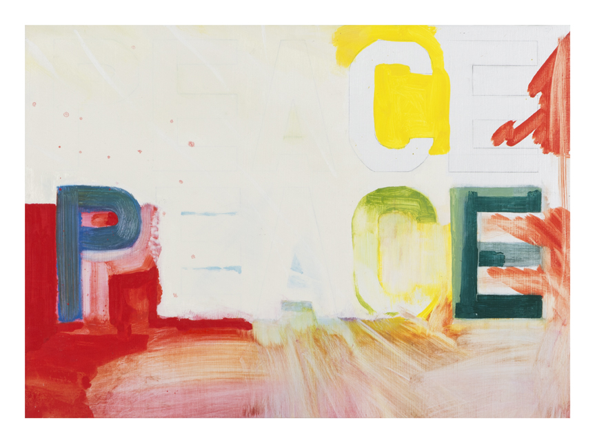
Amelia Saddington
Peace Peace
2010-2012
Oil on board
6.5 x 12 in
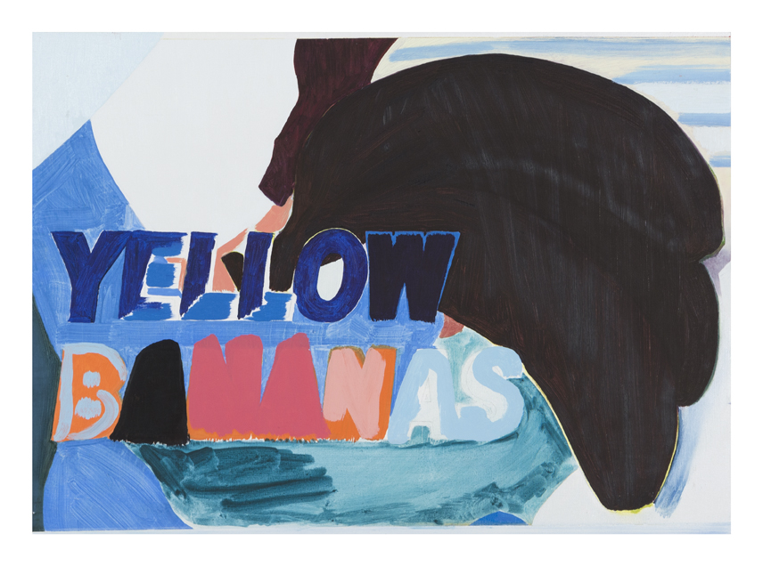
Amelia Saddington
Yellow Bananas
2010-2012
Oil on board
16.5 x 12 inches
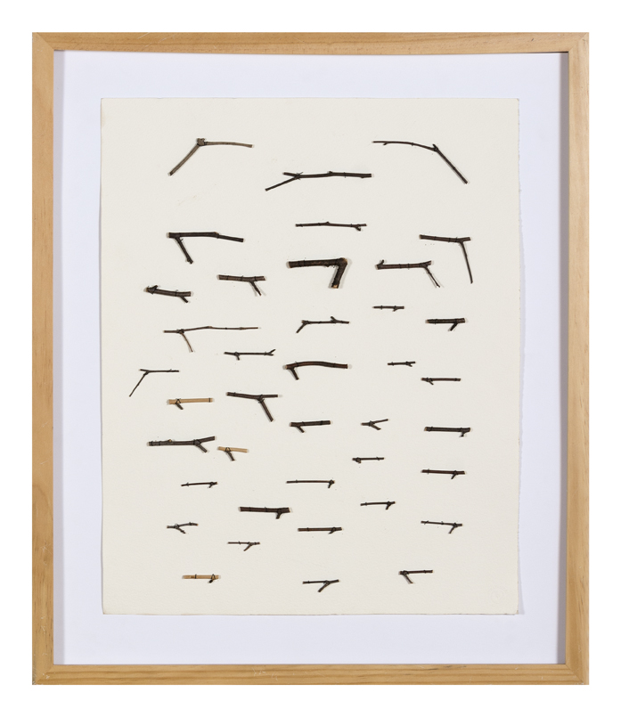
Jenn Nagle Myers
A City Without Guns - Miniature Version #1
2015
Wooden sticks, thread, paper
24 x 20 inches
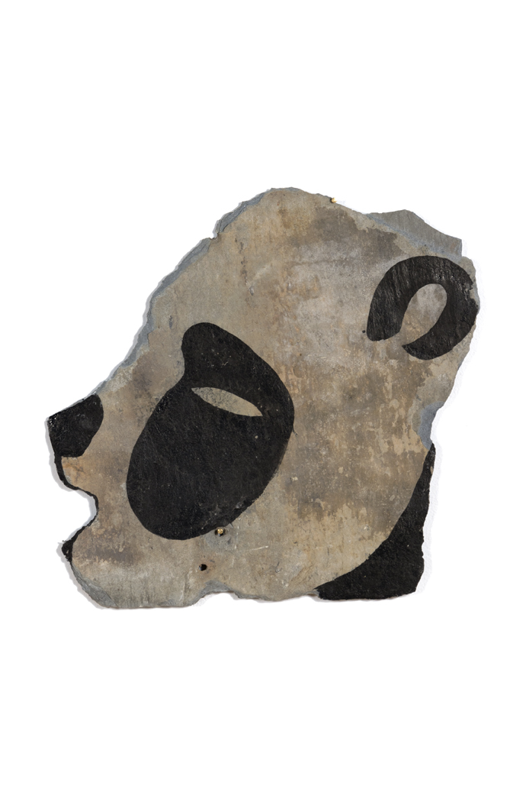
Jenn Nagle Myers
The Witnesses: Gathering #1
2015
Black ink on slate
Dimensions variable
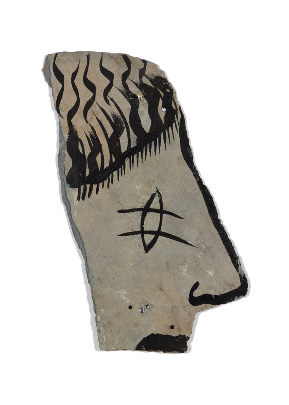
Jenn Nagle Myers
The Witnesses: Gathering #1
2015
Black ink on slate
Dimensions variable
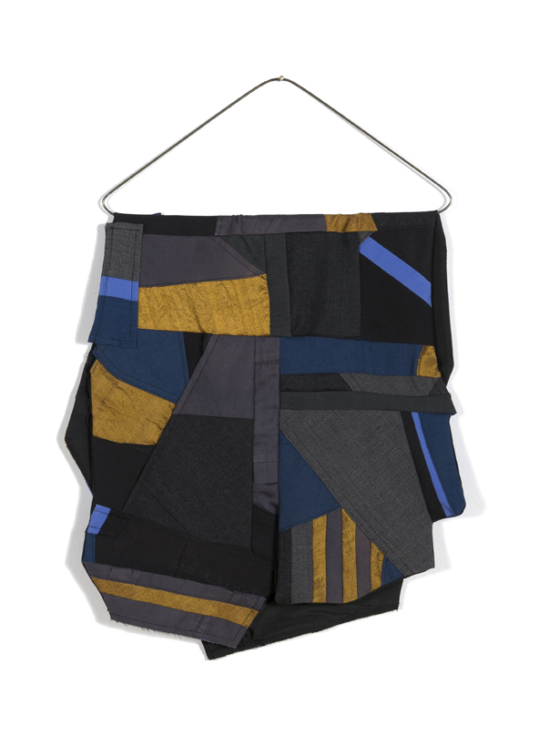
Leah Patgorski
Brilliant Colleague
2015
Wool, silk, cotton, steel
16 x 13 inches
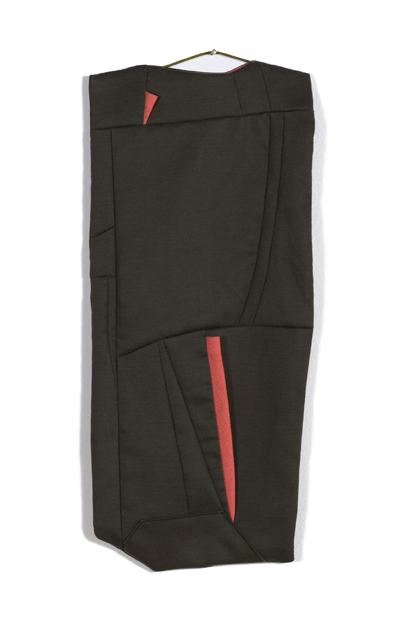
Leah Patgorski
Visitor
2014
Cotton, steel
16 x 6 inches
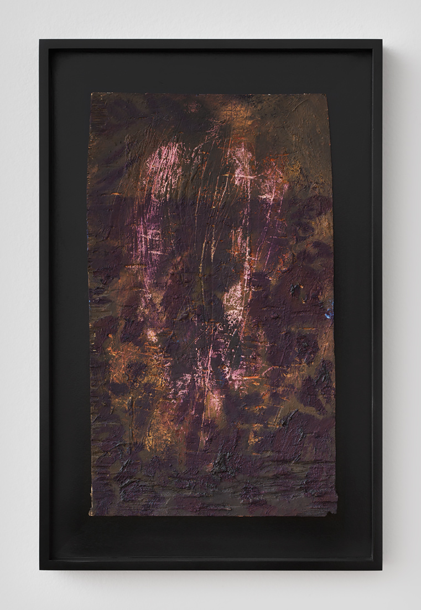
Bianca Beck
Untitled (Page Painting)
2014
Oil on wood
13 x 8 1/2 x 1 1/4 inches
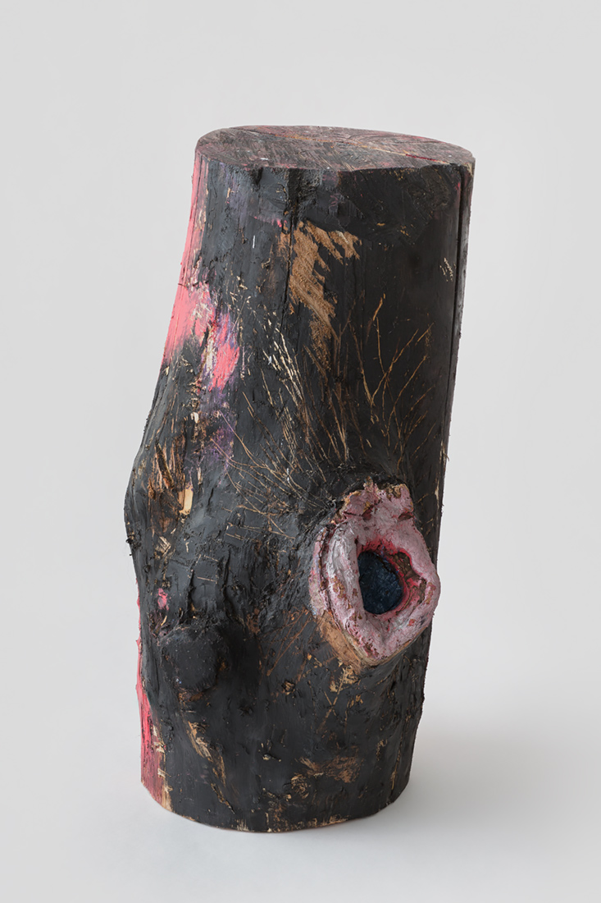
Bianca Beck
Untitled
2013-2015
Oil, ink and wood
18 x 9 x 11 inches
Written Responses
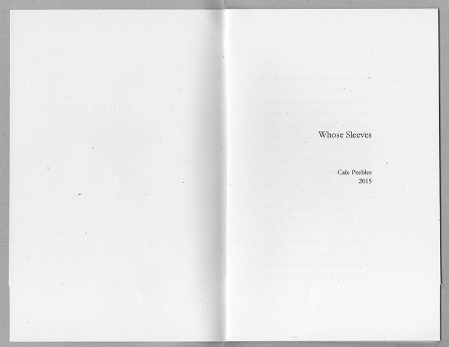
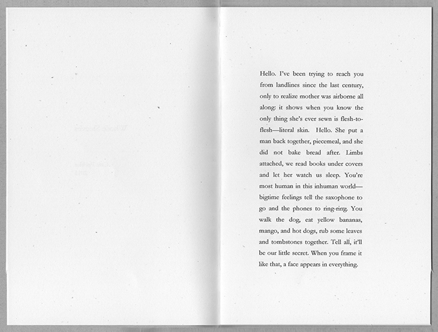
Cate Peebles
Whose Sleeves
(excerpt from full text)
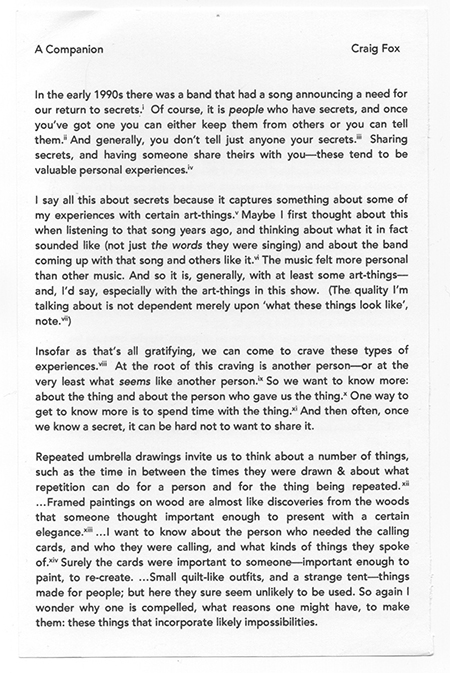
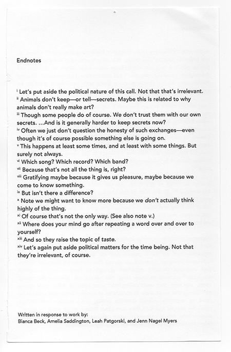
Craig Fox
A Companion